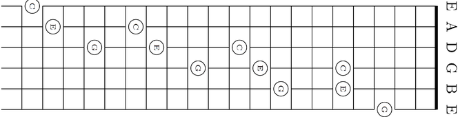
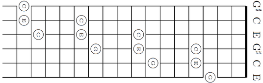

1.Standard

A variety of tunings may be used. The most common tuning, known as "Standard Tuning", has the strings tuned from a low E, to a high E, traversing a two octave range—EADGBE. When all strings are played open the resulting chord is an Em7/add11.
For four strings, the 5th fret on one string is the same open-note as the next string; for example, a 5th-fret note on the sixth string is the same note as the open fifth string. However, between the second and third strings, an irregularity occurs: The 4th-fret note on the third string is equivalent to the open second string.
2.Alternative

Standard tuning has evolved to provide a good compromise between simple fingering for many chords and the ability to play common scales with reasonable left-hand movement. There are also a variety of commonly used alternative tunings, for example, the classes of open, regular, and dropped tunings.
Open tuning refers to a guitar tuned so that strumming the open strings produces a chord, typically a major chord. The base chord consists of at least 3 notes and may include all the strings or a subset. The tuning is named for the open chord, Open D, open G, and open A are popular tunings. All similar chords in the chromatic scale can then be played by barring a single fret. Open tunings are common in blues music and folk music, and they are used in the playing of slide and bottleneck guitars.Many musicians use open tunings when playing slide guitar.
3.Scordatura

Many scordatura (alternate tunings) modify the standard tuning of the lute, especially when playing Renaissance music repertoire originally written for that instrument. Some scordatura drop the pitch of one or more strings, giving access to new lower notes. Some scordatura make it easier to play in unusual keys.